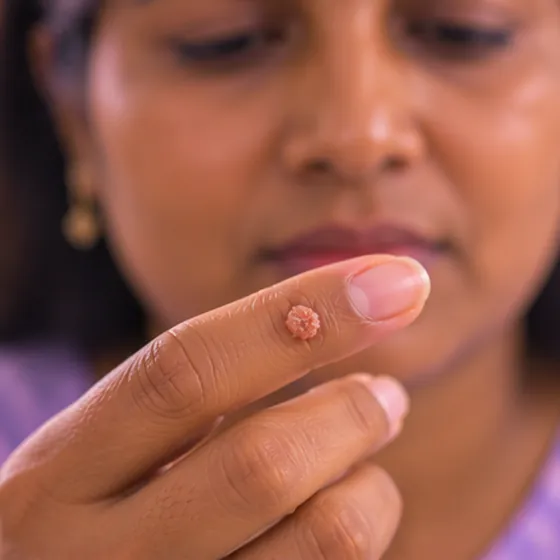

寻常疣
由常见病毒引起、表面粗糙隆起的皮肤小疙瘩
这是什么
寻常疣是由病毒引起的粗糙、隆起的皮肤小疙瘩，常长在手、手指、膝盖或手肘，通常无害。
- 手、手指、膝盖、手肘
- 儿童、青少年和成年人
- 粗糙小疙瘩，通常不痛
- 就诊科室
- 家庭医生；皮肤科医生
- 多发人群
- 儿童、青少年和成年人；免疫力低下者更常见
- 传染性
- 会，可通过皮肤接触或共用毛巾、潮湿的泳池地面等传播
- 病程
- 许多会在几个月内自行消退；有些持续更久或复发
常见表现

皮肤上的小疙瘩丘疹 
粗糙的小疙瘩疣状丘疹
其他症状
- 里面可能有细小的黑点（小血管）
- 通常不痛，但长在脚上或被按压时可能触痛
- 可能只有一个，也可能是几个聚在一起
为什么会这样

细菌或病毒感染感染性病因 
免疫力低下免疫抑制
其他原因
- 接触疣，或接触带有病毒的毛巾、公共淋浴间等物品
- 抠、咬或剃刮皮肤，会把疣传到新的部位
- 皮肤潮湿或受损，以及在潮湿的公共场所赤脚行走
出现这些情况请先看医生
- 疣周围红肿发热不断扩大、流脓或发烧：当天看医生；很不舒服时去医院
- 疣出血、颜色或形状改变、长得很快或看起来不寻常：请医生检查
- 长在面部、私处，或口腔、鼻腔内的疣：请看医生
- 疣很多或扩散很快，尤其是免疫力低下时：请看医生
- 脚底的疣走路时疼痛：请看医生或足病医生
- 不确定是不是疣，或疣一直不消退、反复出现：请看医生
如果有以上情况，请先看医生，再来做调理。
本页只是一般性的健康资讯。请继续按时服用平常的药物，并继续看医生。
请继续日常治疗
请继续按医嘱服药，并按时复诊。我们的调理是温和的辅助，不能代替医疗。
日常护理

不要挤或抠不要挤压 
勤洗手手卫生 
不共用毛巾、剃刀或杯子个人用品分开 
咨询药剂师药剂师建议
更多自我照顾的方法
- 在公共淋浴间和泳池边穿拖鞋，脚要擦干
告诉理疗师
- 皮肤破损、发红或疼痛
- 糖尿病或皮肤感觉减退
- 癌症或正在治疗癌症
- 怀孕
调理师会在开始前和你确认这一项。
常见问题
寻常疣是什么？
由常见病毒引起、表面粗糙隆起的皮肤小疙瘩。寻常疣是由病毒引起的粗糙、隆起的皮肤小疙瘩，常长在手、手指、膝盖或手肘，通常无害。
寻常疣有哪些常见表现？
皮肤上的小疙瘩；粗糙的小疙瘩
为什么会有寻常疣？
细菌或病毒感染；免疫力低下
有寻常疣要怎么照顾自己？
不要挤或抠；勤洗手；不共用毛巾、剃刀或杯子；咨询药剂师
AI Body Master 的调理对寻常疣有帮助吗？
调理是温和的无针经络养生辅助，不能治疗或治愈寻常疣，也不能代替药物或医生。开始前请告诉理疗师。
相关疾病
参考资料: General information based on public health sources such as Mayo Clinic, NHS, Cleveland Clinic and NCBI StatPearls.
页面更新: 2026-11-05